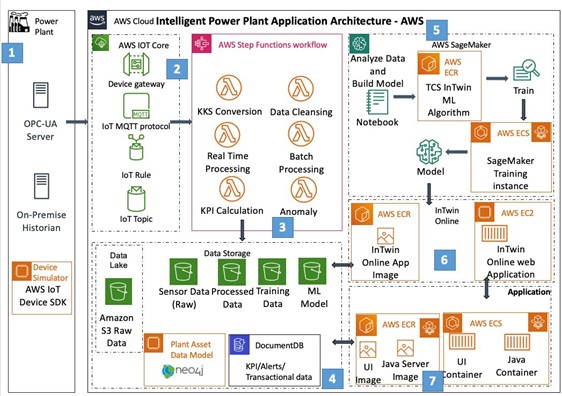
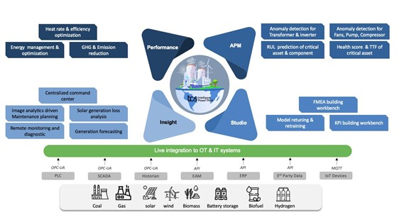

Blog 3
Giải pháp Nhà máy điện thông minh của TCS trên AWS giúp các tiện ích tối ưu hóa hoạt động và thúc đẩy chuyển đổi năng lượng như thế nào
Bởi Alakh Srivastava, Rajesh Natesan, Siva Thangavel và Yogesh Chaturvedi – ngày 19 tháng 3 năm 2025, trong chuyên mục Amazon DocumentDB, Amazon ECS, Amazon S3, AWS IoT Core, AWS Step Functions, Năng lượng (Dầu khí), Industries.
Tổng quan về giải pháp
Các công nghệ kỹ thuật số tiên tiến đang cách mạng hóa ngành năng lượng, cho phép các tổ chức đạt được các mục tiêu bền vững đồng thời giảm chi phí và khí thải carbon.
Theo McKinsey, chuyển đổi kỹ thuật số trong lĩnh vực năng lượng có thể mở ra 1,6 nghìn tỷ USD giá trị vào năm 2035, giúp giảm 20–30% chi phí vận hành và 5% lượng khí thải carbon.
Khi ngành công nghiệp tiến tới mô hình phát điện phân tán tích hợp năng lượng tái tạo, các doanh nghiệp cần những giải pháp thông minh như lưới điện số, AI điều phối năng lượng, và nền tảng giám sát thời gian thực.
Giải pháp Nhà máy điện thông minh (Smart Power Plant) của TCS ra đời để đáp ứng điều đó — mang lại hiệu suất tăng 0,5%, giảm 8% NOx, và cải thiện 8–10% độ chính xác dự báo phát điện tái tạo.
Được xây dựng trên nền tảng AWS, giải pháp này tận dụng sức mạnh của AI/ML để xử lý dữ liệu thời gian thực từ hàng nghìn cảm biến năng lượng trên nhiều địa điểm.
Bài viết này trình bày cách TCS và AWS cùng hợp tác mang lại hiệu quả vận hành vượt trội và kết quả kinh doanh bền vững cho ngành năng lượng.
Kiến trúc giải pháp và luồng dữ liệu
Kiến trúc của giải pháp được thiết kế theo luồng dữ liệu khép kín, tận dụng các dịch vụ AWS để quản lý, xử lý và phân tích thông tin một cách toàn diện.

Hình 1. Kiến trúc tổng thể của giải pháp Nhà máy điện thông minh trên AWS.
- Nhập dữ liệu: Thu thập dữ liệu từ OPC-UA (thiết bị công nghiệp), hệ thống lịch sử tại chỗ và hồ dữ liệu Amazon S3.
Mỗi tổ máy có thể gửi tới 4.000 giá trị cảm biến mỗi phút. - Tiếp nhận và điều phối: AWS IoT Core tiếp nhận luồng dữ liệu và kích hoạt AWS Step Functions để điều phối tự động.
- Xử lý dữ liệu: Các AWS Lambda functions thực hiện làm sạch, tính toán KPI và tạo cảnh báo.
- Lưu trữ: Amazon DocumentDB lưu dữ liệu có cấu trúc (KPI, cảnh báo), Amazon S3 lưu dữ liệu cảm biến thô và kết quả huấn luyện.
- Đào tạo mô hình ML: Thực hiện trong Amazon SageMaker, mô hình được lưu trong Amazon Elastic Container Registry (ECR).
- Suy luận thời gian thực: Mô hình được triển khai qua Amazon ECS cho TCS InTwin (engine phân tích online).
- Triển khai ứng dụng: Giao diện front-end/back-end chạy container trên Amazon ECS đảm bảo mở rộng linh hoạt.
Các chức năng chính
Giải pháp Nhà máy điện thông minh của TCS mang đến bốn khả năng cốt lõi giúp thay đổi cách các nhà máy vận hành:

Hình 2. Bốn năng lực cốt lõi của giải pháp.
-
Bản sao kỹ thuật số AI tự học (Self-learning Digital Twin):
Kết hợp dữ liệu thực và mô hình AI vật lý để liên tục thích nghi với điều kiện hoạt động, đảm bảo dự đoán chính xác và tiết kiệm chi phí. -
Giải pháp mở và có thể mở rộng:
Có thể tích hợp với hệ thống nhà máy hiện có hoặc mô hình AI riêng, kiến trúc mở và có khả năng giải thích. -
Bàn làm việc kỹ thuật số low-code:
Cho phép tạo và quản lý mô hình AI nhanh chóng, hỗ trợ tạo KPI, FMEA và các use case cụ thể. -
Nền tảng dựng sẵn:
Các mô-đun có thể cấu hình sẵn cho từng nhà máy, giúp rút ngắn thời gian triển khai và mở rộng quy mô dễ dàng.
Các trường hợp sử dụng thực tế
Dự báo phát điện mặt trời
Sử dụng mô hình ML và phân tích nâng cao để dự đoán sản lượng năng lượng tái tạo.
Tại một trang trại gió ngoài khơi ở Anh, độ chính xác dự báo tăng 15,1%, doanh thu tăng 6%.
Tối ưu hóa quá trình đốt cháy trong sản xuất nhiệt
Tại một nhà máy Nhật Bản, AI giúp cải thiện 0,5% hiệu suất, giảm 8% NOx, tiết kiệm 2,5 triệu USD/năm.
Bảo trì dự đoán linh kiện tuabin khí
Tại một nhà máy Úc, mô hình dự đoán hỏng hóc trước 8–12 tháng, giảm 20% chi phí bảo trì và thời gian ngừng hoạt động.
Lợi ích kinh doanh
Giải pháp của TCS giúp doanh nghiệp năng lượng:
| Lợi ích | Tác động |
|---|---|
| Giảm chi phí vận hành | Cắt giảm tới 20% chi phí bảo trì và vận hành. |
| Dự đoán hỏng hóc chính xác | Độ chính xác dự báo lỗi lên đến 85%. |
| Tối ưu hóa KPI và giảm khí thải | Cải thiện hiệu suất đồng thời giảm phát thải carbon. |
| Hỗ trợ lực lượng lao động | AI hỗ trợ ra quyết định, giảm phụ thuộc vào kinh nghiệm cá nhân. |
Ngoài ra, việc tích hợp AWS giúp loại bỏ các silo dữ liệu, nâng cao năng suất và tạo nền tảng chuẩn hóa cho các nhà máy điện trong tương lai.
Kết luận
Giải pháp Nhà máy điện thông minh TCS trên AWS đang định hình tương lai bền vững của ngành năng lượng.
Thông qua AI và phân tích nâng cao, nền tảng này giúp tối ưu hiệu suất, bảo trì dự đoán, và tích hợp liền mạch năng lượng tái tạo.
TCS – với chuyên môn sâu và đội ngũ chuyên gia được AWS chứng nhận – đã chứng minh khả năng triển khai thành công trên nhiều loại hình nhà máy, từ nhiệt điện truyền thống đến năng lượng tái tạo quy mô lớn.
Để tìm hiểu thêm, hãy xem bài đăng gốc của TCS về Giải pháp Nhà máy điện thông minh trên AWS.
Giới thiệu về các tác giả
Alakh Srivastava
Giám đốc sản phẩm toàn cầu – Thực hành Nhà máy điện thông minh, TCS.
Hơn 20 năm kinh nghiệm trong chuyển đổi kỹ thuật số ngành điện, chuyên về năng lượng tái tạo, AI và IoT công nghiệp.
Rajesh Natesan
Trưởng nhóm Kỹ thuật chính – Nhóm Nhà máy điện thông minh, TCS.
20 năm kinh nghiệm trong IoT, AI/ML và kiến trúc hệ thống năng lượng quy mô lớn.
Siva Thangavel
Kiến trúc sư giải pháp đối tác tại AWS.
Cung cấp giải pháp kiến trúc tối ưu cho đối tác và khách hàng doanh nghiệp trong nhiều ngành công nghiệp.

Yogesh Chaturvedi
Kiến trúc sư giải pháp chính tại AWS – lĩnh vực Năng lượng và Tiện ích.
Tập trung giúp khách hàng giải quyết thách thức bằng công nghệ đám mây. Ngoài công việc, anh yêu thích đi bộ đường dài, du lịch và thể thao.